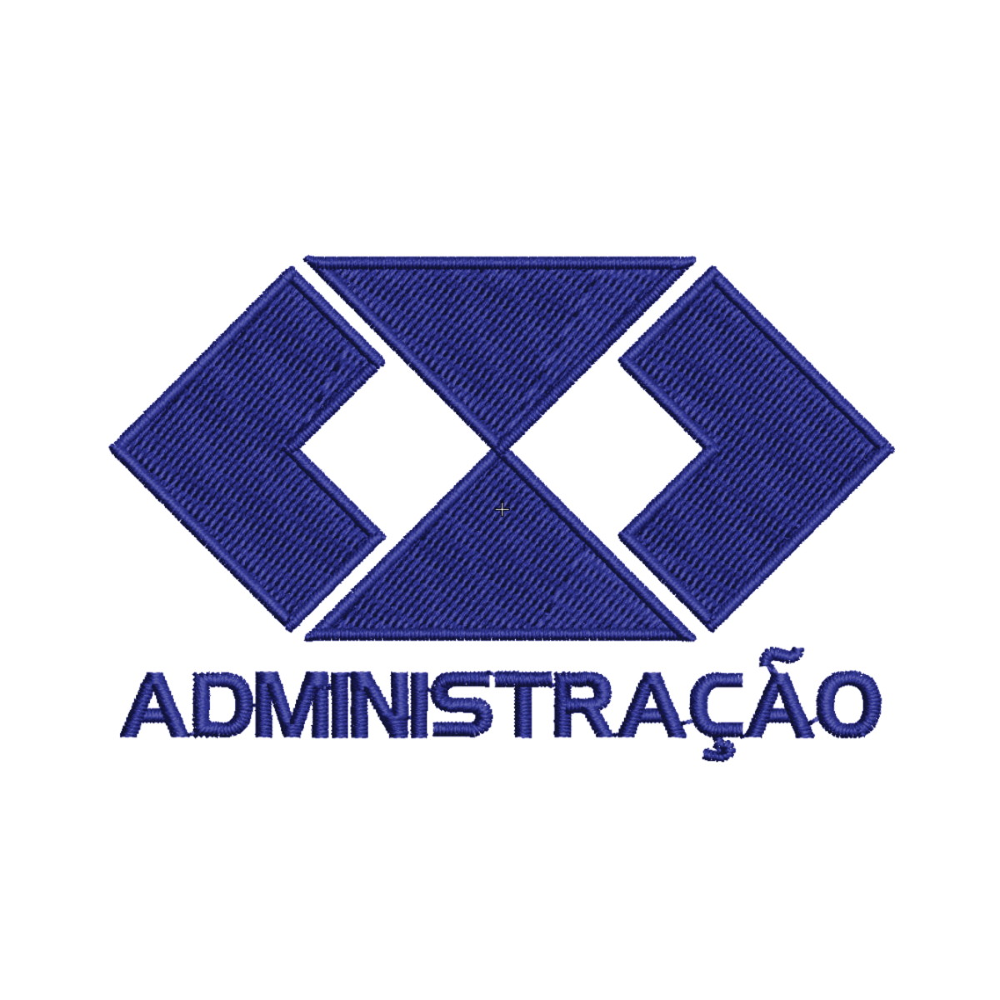
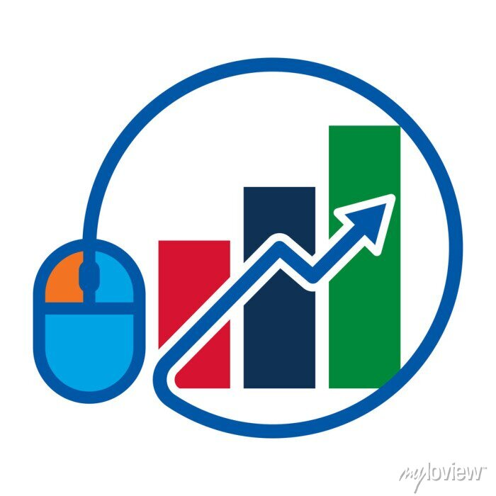
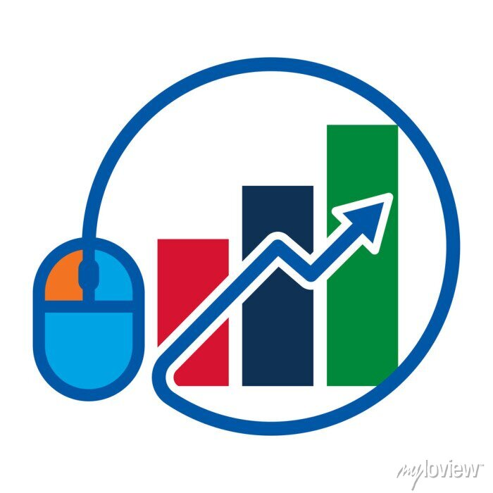
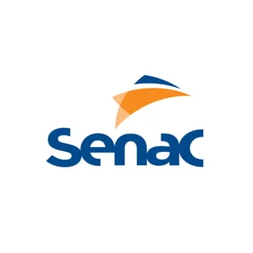

Inicio
Sobre mim
Contato
Olá! Meu nome é Emilaine de Alvarenga e sou uma técnica em administração apaixonada por promover eficiência e organização nos processos empresariais. Com sólida experiência em gestão de projetos e otimização de fluxos de trabalho, estou comprometida em impulsionar o sucesso das organizações por meio de práticas administrativas sólidas e eficazes.
PRINCIPAIS CURSOS
 

Técnico em administração
Programador Web
Marketing em Vendas
PROJETO DESTAQUE
Experiência comprovada em Desenvolvimento de Grupos, demonstrando habilidades sólidas em liderança e colaboração. Proficiente em facilitar a comunicação eficaz e incentivar a cooperação dentro de equipes multifuncionais. Capacidade comprovada de motivar e orientar membros do grupo para alcançar objetivos compartilhados, promovendo um ambiente de trabalho positivo e produtivo.
CONTATO